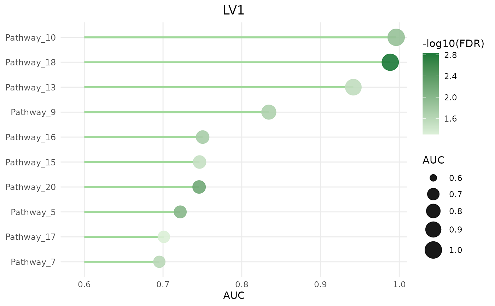
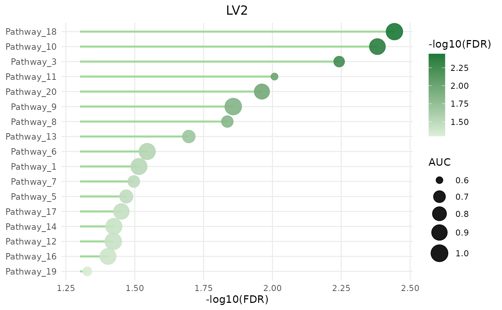

Lollipop-style dot plot showing the top pathways associated with one
selected LV. Dot size encodes AUC; dot colour encodes -log10(FDR).
The x-axis and pathway ordering can use either AUC or -log10(FDR).
Usage
CLAMPdotplot(
clampRes,
lv = 1,
top = 20,
auc.cutoff = 0.6,
fdr.cutoff = 0.05,
max.name.len = 50,
x.axis = c("AUC", "-log10(FDR)", "log10FDR"),
order.by = x.axis
)Arguments
- clampRes
A CLAMP result list containing a
summarydata frame, or the summary data frame itself.- lv
LV to plot: either a numeric index (e.g.
1->"LV1") or a character name (e.g."LV3"). Default1.- top
Maximum number of pathways to display, chosen by
order.by. Default20.- auc.cutoff
Minimum AUC to display. Default
0.6.- fdr.cutoff
Maximum FDR to display. Default
0.05.- max.name.len
Maximum characters for pathway label trimming. Default
50.- x.axis
Metric to place on the x-axis. Use
"AUC"or"-log10(FDR)"."log10FDR"is also accepted. Default"AUC".- order.by
Metric used to choose the top pathways and order the y-axis. Use
"AUC"or"-log10(FDR)"."log10FDR"is also accepted. Defaults tox.axis.
Value
Invisibly returns a ggplot2::ggplot() object.
Examples
set.seed(9)
pathways <- paste0("Pathway_", 1:20)
lvs <- paste0("LV", 1:5)
nr <- length(pathways) * length(lvs)
summ <- data.frame(
pathway = rep(pathways, length(lvs)),
LV = rep(lvs, each = length(pathways)),
AUC = runif(nr, 0.5, 1.0),
FDR = runif(nr, 0, 0.05),
stringsAsFactors = FALSE
)
CLAMPdotplot(list(summary = summ), lv = 1, top = 10)

CLAMPdotplot(list(summary = summ), lv = "LV2", x.axis = "-log10(FDR)",
order.by = "-log10(FDR)")
